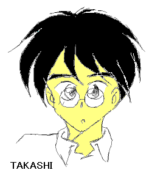
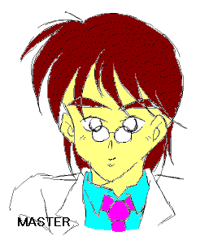
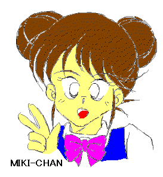
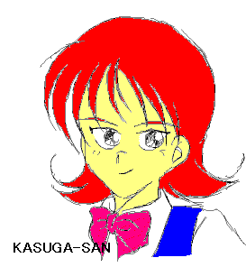
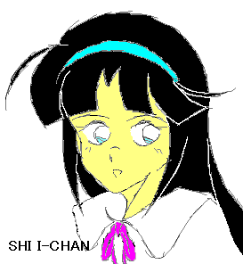

「僕は死んだ。でも自宅に帰った。女の子型ロボットとして」
高志（川村 高志）
主人公。高校一年のときに不治の病に犯される。
いじめで失っていた生きる意志を取り戻しかけたときに病状が悪化、あっけなく他界する。
しかし、そのとき奇跡は舞い降りた……。
ごくごく普通の少年として描いたつもりです。文章にない眼鏡で生真面目さを出してみました。
転生（転性？）前の姿を描くのはタブーかな、と思いつつあえて描きました。

「君は最新型だから、僕のことをマスターと呼ぶ必要は無いんだけどね」マスター（寺門（てらかど） まこと）
サイバネティックス社の人間サポート用ロボット開発主任。
Ｃ型と呼ばれる人工人間の開発を手がける。
しかし、Ｃ型はコストがかかり過ぎるという理由でプロジェクト自体が廃棄され、唯一完成したＣ−０００１が高志の新たな身体として供される。
物語では 「おっさん」 呼ばわりされていましたが、口調から、二十代後半・独身と勝手に設定してみました。
『少年少女文庫宴会』 での、マッドな言動にも対応できるようにしてあります。
志衣ちゃんのことを 『最高傑作』 なんて呼んでるのは、多分照れくさいからでしょう。
追記・Ｋさんにマスターのフルネームの名付け親になってくださいと言われました。
……で、名字を 『寺門』 にしてみました。
「寺門主任！」なんて呼ばれたらちょっとかっこいいかもしれません。

「私はあなたのことを志衣ちゃんと呼ぶことに決めました。私のことは美紀って呼んでね」美紀ちゃん（小笠原 美紀）
『川村志衣』 として女子校に転入した高志のクラスメート。
無邪気で表裏がなく、誰に対してもオープンな性格。
授業中でも騒がしいのがたまに傷。
根っから世話好きで、明るい性格と見ました。顔は、わたしのベーシックなキャラです。「えっへん、志衣ちゃんの事で志衣ちゃんのお母さんの頼みじゃ、この美紀ちゃんは断れません！」 という台詞も印象的です。

「そして今は私の心の中にも 『川村志衣』 は存在します。おおきく、そしてやさしい存在として」
春日さん（春日 玲子（れいこ））
川村志衣（高志）のクラスメート。
大病院の一人娘。悪く言えばわがままな性格。
今回描いてみて、個人的に一番出来が気に入ったキャラクターです。
理屈っぽいしゃべり方が、印象的です。孤高を保っていた彼女が志衣ちゃんを通じて、どれだけ変わっていくか見ていきたいです
追記・春日さんのフルネームはＫさんのオリジナルです。念のため。

「春日さん、美紀ちゃん。ふたりとも僕の・・・、ううん、私の、 『川村志衣』 の大切なお友達だよ・・・。ありがとう」
志衣ちゃん（川村志衣）
Ｃ型と呼ばれる人間サポート用ロボット（人工人間）の試作体。
型式番号Ｃ−０００１。
生体部品とナノテクとクローン技術の固まりで、生物上人間と全く変わらない。
死に瀕した高志の意識と記憶が電気信号に変換されて、この身体に “移植” された。
ようやくヒロインのご登場です。
「人工人間なので、表情が乏しい」 とありましたが、そこらへんがうまく出ているでしょうか？ ちなみに身に着けているのは三作目に出てきた純白のワンピースのつもりです。
何だかんだ言いつつも結構気合入れて描いています。
そして……
「ほらっ、志衣ちゃん、もっとちゃんと寄ってくれないと入らないよ〜」
「で、でも美紀ちゃん……、真ん中なんて……恥ずかしいよ、僕……」
「川村さん、あなた女の子——それも女子高生なんですから、もう 『僕』 なんて言い方は卒業ですよ」
「かっ、春日さ〜ん……（赤面）」
「それじゃあ、撮るよ〜っ！」